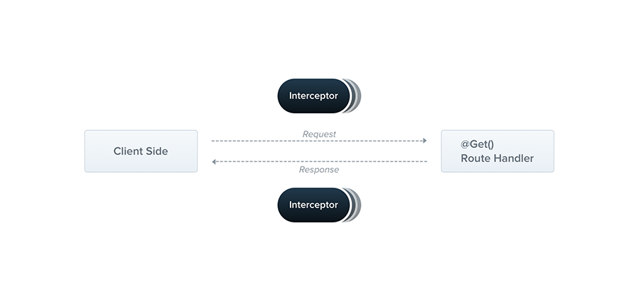

1. Basic Interceptor Setup
Create an interceptor to log request details or transform responses:
Creating a Logging Interceptor
import { Injectable, NestInterceptor, ExecutionContext, CallHandler } from '@nestjs/common';
import { Observable } from 'rxjs';
import { tap } from 'rxjs/operators';
@Injectable()
export class LoggingInterceptor implements NestInterceptor {
intercept(context: ExecutionContext, next: CallHandler): Observable<any> {
const request = context.switchToHttp().getRequest();
const method = request.method;
const url = request.url;
const now = Date.now();
return next
.handle()
.pipe(
tap(() => console.log(`[$ {method}] $ {url} - $ {Date.now() - now}ms`))
);
}
}
Key Interceptor Features
Intercept Method
Handles request and response processing
RxJS Integration
Uses observables for flexible handling
Cross-cutting Logic
Applies logging, caching, or transformation
Global or Local
Can be applied globally or per route
1.1 Applying an Interceptor to a Controller/Method
You can apply interceptors at different levels: globally, at a controller, or at a specific route method.
Applying LoggingInterceptor at Controller Level
import { Controller, Get, UseInterceptors } from '@nestjs/common';
import { LoggingInterceptor } from './interceptors/logging.interceptor';
@Controller('api/users')
@UseInterceptors(LoggingInterceptor)
export class UsersController {
@Get()
findAll() {
return [
{ id: 1, name: 'Alice' },
{ id: 2, name: 'Bob' }
];
}
@Get('/profile')
getProfile() {
return { id: 99, name: 'John Profile' };
}
}
Applying Interceptor at Method Level
@Get('/:id')
@UseInterceptors(LoggingInterceptor)
findOne() {
return { id: 10, name: 'Method Scoped User' };
}
Key Points
@UseInterceptors() applies interceptor at controller or method scope.- Multiple interceptors can be combined:
@UseInterceptors(A, B).
- Global interceptors affect all routes, while scoped interceptors affect only the decorated class/method.
2. Basic Custom Pipe Setup
Create a custom pipe to validate or transform incoming data:
Creating a ParseInt Pipe
import { PipeTransform, Injectable, ArgumentMetadata, BadRequestException } from '@nestjs/common';
@Injectable()
export class ParseIntPipe implements PipeTransform {
transform(value: any, metadata: ArgumentMetadata) {
const val = parseInt(value, 10);
if (isNaN(val)) {
throw new BadRequestException('Validation failed: ID must be a number');
}
return val;
}
}
Applying the Pipe
Use the pipe in a controller:
import { Controller, Get, Param } from '@nestjs/common';
import { ParseIntPipe } from './pipes/parse-int.pipe';
@Controller('api/users')
export class UsersController {
@Get(':id')
findOne(@Param('id', ParseIntPipe) id: number) {
return { id, name: 'John Doe' };
}
}
Key Pipe Features
Transform Method
Validates or transforms input data
Exception Handling
Throws exceptions for invalid data
Reusable Logic
Applies consistent validation rules
Parameter-level
Targets specific parameters or body
3. Advanced Interceptor Usage
Interceptors can transform responses or implement caching:
Response Transformation Interceptor
import { Injectable, NestInterceptor, ExecutionContext, CallHandler } from '@nestjs/common';
import { Observable } from 'rxjs';
import { map } from 'rxjs/operators';
@Injectable()
export class TransformInterceptor implements NestInterceptor {
intercept(context: ExecutionContext, next: CallHandler): Observable<any> {
return next
.handle()
.pipe(
map(data => ({
statusCode: context.switchToHttp().getResponse().statusCode,
data,
message: 'Success',
timestamp: new Date().toISOString()
}))
);
}
}
Applying Interceptor Globally
Apply the interceptor in the main application:
import { NestFactory } from '@nestjs/core';
import { AppModule } from './app.module';
import { TransformInterceptor } from './interceptors/transform.interceptor';
async function bootstrap() {
const app = await NestFactory.create(AppModule);
app.useGlobalInterceptors(new TransformInterceptor());
await app.listen(3000);
}
bootstrap();
Key Points
- Interceptors can wrap responses in a consistent format.
- Use RxJS operators like
map for transformations.
- Interceptors can be applied globally or per route.
- Handle cross-cutting concerns like logging or caching.
4. Advanced Custom Pipe Usage
Create a custom pipe for complex validation or transformation:
Custom Validation Pipe
import { PipeTransform, Injectable, ArgumentMetadata, BadRequestException } from '@nestjs/common';
@Injectable()
export class UserValidationPipe implements PipeTransform {
transform(value: any, metadata: ArgumentMetadata) {
if (!value.name || value.name.length < 3) {
throw new BadRequestException('Name must be at least 3 characters');
}
if (!value.email || !value.email.includes('@')) {
throw new BadRequestException('Invalid email format');
}
return value;
}
}
Using the Pipe in a Controller
Apply the custom pipe to validate request bodies:
import { Controller, Post, Body, HttpStatus, HttpCode } from '@nestjs/common';
import { UserValidationPipe } from './pipes/user-validation.pipe';
@Controller('api/users')
export class UsersController {
@Post()
@HttpCode(HttpStatus.CREATED)
create(@Body(UserValidationPipe) userData: any) {
return { message: 'User created', data: userData };
}
}
Key Points
- Pipes validate or transform specific inputs.
- Custom pipes handle complex validation logic.
- Pipes can be applied to parameters or body.
- Throw exceptions for invalid data.
5. Best Practices for Interceptors and Pipes
Organize interceptors and pipes for scalability and maintainability:
Directory Structure
project/
├── src/
│ ├── users/
│ │ ├── pipes/
│ │ │ ├── parse-int.pipe.ts
│ │ │ └── user-validation.pipe.ts
│ │ ├── interceptors/
│ │ │ ├── logging.interceptor.ts
│ │ │ └── transform.interceptor.ts
│ │ ├── users.controller.ts
│ │ ├── users.service.ts
│ │ └── users.module.ts
│ ├── app.module.ts
│ └── main.ts
Best Practices
Single Responsibility
Each interceptor or pipe should have one purpose
Global Interceptors
Use global interceptors for common tasks like logging
Reusable Pipes
Create reusable pipes for common validations
Error Handling
Combine pipes with exception filters for robust validation
15 Important Interview Questions on NestJS Interceptors & Custom Pipes
-
What is an interceptor in NestJS?
An interceptor is a class that implements NestInterceptor to handle cross-cutting concerns like logging or response transformation.
Basics
-
What is a custom pipe in NestJS?
A custom pipe implements PipeTransform to validate or transform incoming data.
Basics
-
What is the role of the intercept method?
It processes requests and responses, allowing logic before and after handler execution.
Interceptors
-
How do you apply an interceptor?
Use @UseInterceptors() on a controller/method or globally with useGlobalInterceptors().
Interceptors
-
What is the purpose of the transform method in pipes?
It validates or transforms input data before it reaches the handler.
Pipes
-
How do you create a custom pipe?
Implement PipeTransform with a transform method and use @Injectable().
Pipes
-
What is the benefit of using RxJS in interceptors?
RxJS operators like map or tap allow flexible request/response handling.
Interceptors
-
How do pipes handle validation errors?
They throw exceptions like BadRequestException for invalid data.
Pipes
-
What is the ExecutionContext in interceptors?
It provides access to request, response, and execution details.
Interceptors
-
How do you apply a pipe to a specific parameter?
Use @Param('id', ParseIntPipe) or @Body(ParseIntPipe) in the controller.
Pipes
-
Why use global interceptors?
They centralize logic like logging or response formatting across all routes.
Interceptors
-
What is the difference between a pipe and a middleware?
Pipes target specific parameters or bodies, while middleware applies to entire requests.
Pipes
-
How do you test an interceptor?
Mock the ExecutionContext and CallHandler to test interceptor logic.
Testing
-
How do you test a custom pipe?
Instantiate the pipe and test its transform method with sample inputs.
Testing
-
How can interceptors be used for caching?
Store responses in a cache within the interceptor and return cached data for matching requests.
Interceptors